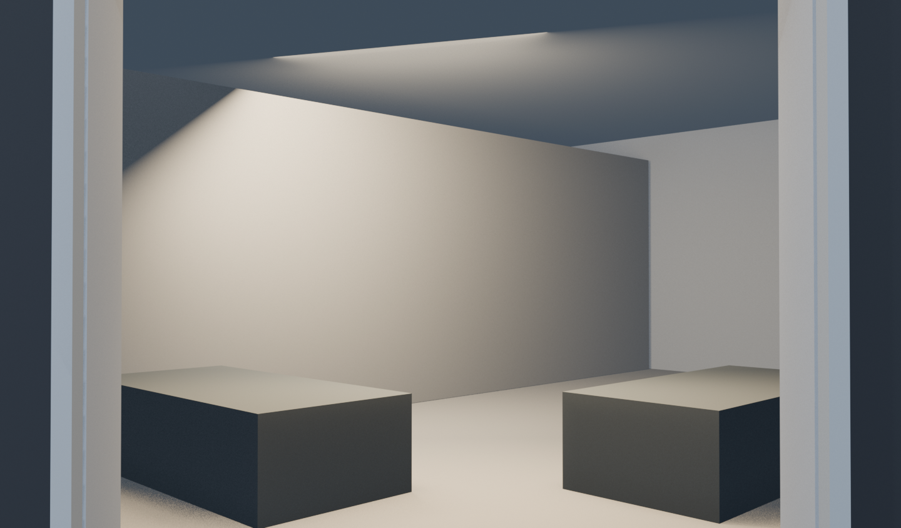

La escena entrega el cuadro en la entrada.
El video visible termina a los 3,5 segundos, mientras el marco del acceso aún está en pantalla. El avance posterior queda reservado para la futura integración con la interfaz.
Prueba anterior4,79 s
Nuevo video 3D visible3,54 s
Recorte1,25 s
Nuevo · entrega en el acceso
La vista termina donde la futura interfaz debería tomar el relevo.
Referencia · prueba completa
Conservada para comparar el tramo que se quitó de la presentación visible.
Precisión espacial: en el último fotograma visible la cámara todavía está aproximadamente 2 m afuera. El archivo Blender conserva la trayectoria completa, que cruza la entrada y termina 20 cm dentro. Aquí sólo se recorta lo que vería el usuario antes de una futura transición. No hay animación de puerta ni interfaz.
Último fotograma visible

Frame 85 · 3,50 s de trayectoria · punto propuesto de entrega visual.
Archivo Blender v003Video recortadoQué queda visible y qué sigue en Blender